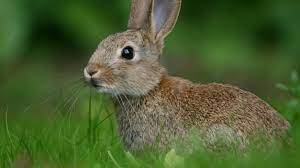

Кожа млекопитающих относительно толстая, богатая кожными железами — потовыми, сальными, пахучими железами. Наличие кожных желёз и волосяного покрова обеспечивает совершенную терморегуляцию. Наиболее характерны для них молочные железы — видоизменённые потовые железы, — которые имеются у самок. Протоки молочных желёз открываются на определённых участках кожи брюшной стороны. Выделяемое этими железами молоко сосут новорождённые млекопитающие.
Скелет состоит из черепа, позвоночника, поясов конечностей и костей парных конечностей. Череп млекопитающих отличается большим объёмом черепной, или мозговой, коробки. Кости её срастаются в швах довольно поздно, поэтому во время роста животного головной мозг может увеличиваться в объёме. Позвоночник состоит из пяти отделов: шейного (у всех млекопитающих в его состав входят семь подвижно соединённых позвонков), грудного, поясничного, крестцового и хвостового. К позвонкам грудного отдела причленяются рёбра, своей хрящевой частью они соединяются с грудной костью, или грудиной, образуя грудную клетку.
При кормлении кролики не удаляются более чем на 100 м от нор. В связи с этим их рацион не отличается избирательностью, и состав кормов определяется их доступностью. Зимой и летом питание различается. Летом поедают зелёные части травянистых растений; на полях и на огородах питаются салатом, капустой, различными корнеплодами и зерновыми культурами. Зимой помимо сухой травы часто выкапывают подземные части растений. Заметную роль в зимнем питании играют побеги и кора деревьев и кустарников. «Окольцовывают» стволы вишень и акаций, в случае голода грызут кору грецких орехов, пытаются залезть на деревья и кустарники на высоту до 1,5 м[3]. В ситуации дефицита корма поедают и собственные фекалии
.jpg)